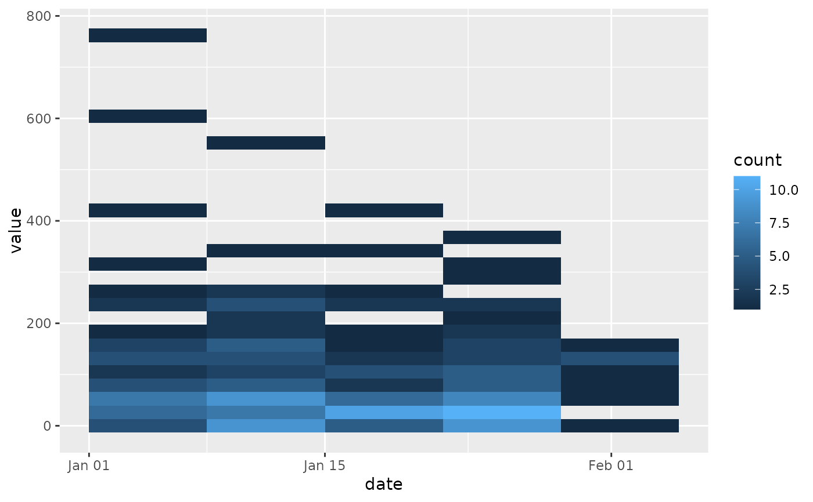

Computes week bins for date data in the x aesthetic, and allows
the binning to be specified for the y aesthetic. This is mostly equivalent to
ggplot2::stat_bin_2d() with the x aesthetic handling fixed to weeks.
Usage
stat_week_2d(
mapping = NULL,
data = NULL,
geom = "tile",
position = "identity",
...,
bins.y = NULL,
binwidth.y = NULL,
breaks.y = NULL,
center.y = NULL,
boundary.y = NULL,
closed.y = c("left", "right"),
drop = TRUE,
week_start = getOption("phylepic.week_start"),
na.rm = FALSE,
show.legend = NA,
inherit.aes = TRUE
)Arguments
- mapping, data, geom, position, na.rm, show.legend, inherit.aes, ...
See ggplot2::stat_bin_2d.
- bins.y, binwidth.y, breaks.y, center.y, boundary.y, closed.y
See the analogous parameters in ggplot2::stat_bin_2d.
- drop
drop bins with zero count.
- week_start
Day the week begins (defaults to Monday). Can be specified as a case-insensitive English weekday name such as "Monday" or an integer. Since you generally won't want to mix definitions, it is more convenient to control this globally with the
"phylepic.week_start"option, e.g.options(phylepic.week_start = "Monday").
Details
The computed aesthetics are similar to those of stat_bin_2d(), including
after_stat(count), after_stat(density), and the bin positions and sizes:
after_stat(xmin), after_stat(height), and so on.
Examples
library(ggplot2)
set.seed(1)
events <- rep(as.Date("2024-01-31") - 0:30, rpois(31, 6))
values <- round(rgamma(length(events), 1, 0.01))
df <- data.frame(date = events, value = values)
ggplot(df) + stat_week_2d(aes(date, value), week_start = "Monday")
#> `stat_week_2d()` using `bins.y = 30`. Pick better value with `binwidth.y`.
